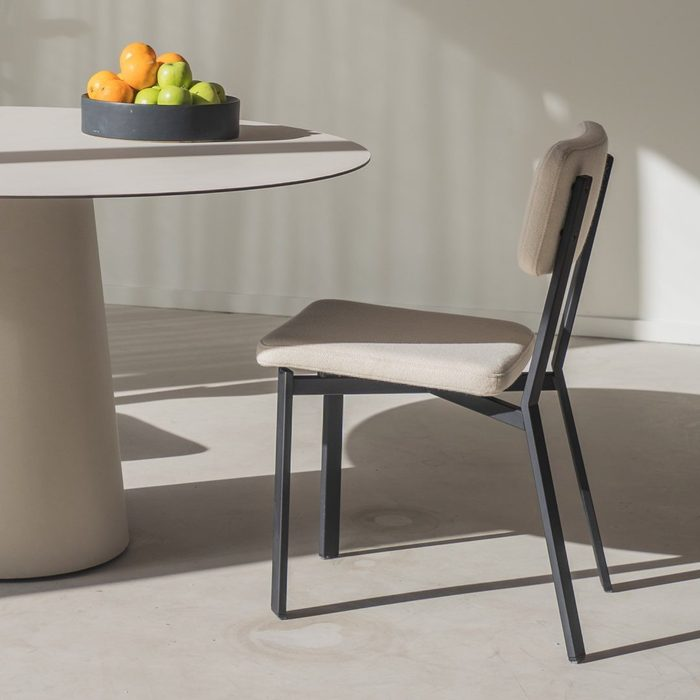
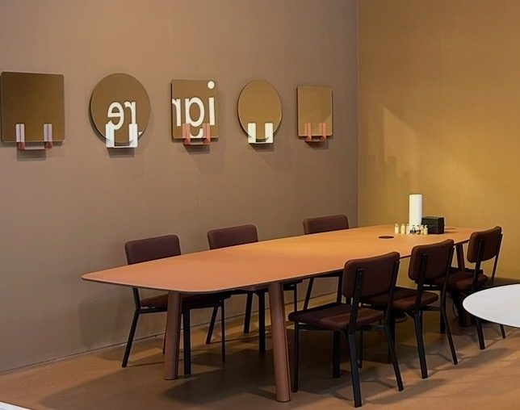
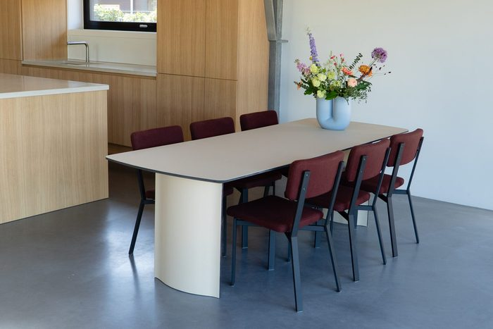
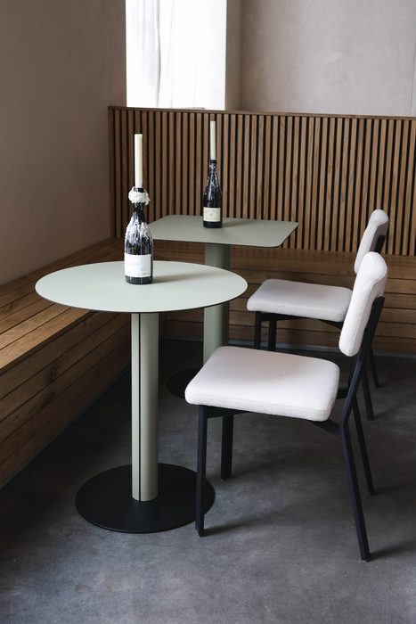

Maison d'Artiste — GLUE6th FloorAll makers →
ignore
ignore is an Amsterdam-based design studio developing minimalist furniture and interior objects with a distinctive, timeless character, produced locally in the Netherlands. On view at Maison d'Artiste: three designers, five pieces.
100% of the sale proceeds go to the maker. Sales inquiries for the works shown here are coordinated by Julien van Hassel at ignore.
—Designers3 shown
Gerard de Hoop
Modulate
Jan Willem van Elten
Shift
Marc Th. van der Voorn
Serve, Dine & Conference
—Works5 recorded

Gerard de Hoop · upholstered
from € 2.161,– available

Jan Willem van Elten · upholstered
from € 545,– available

Marc Th. van der Voorn · furniture linoleum
Price on request on request

Marc Th. van der Voorn · furniture linoleum
from € 2.750,– available

Marc Th. van der Voorn · furniture linoleum
€ 889,– available